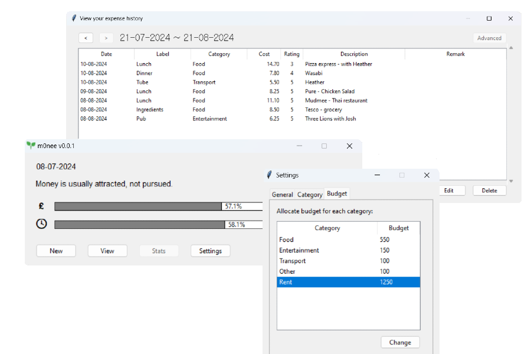

m0nee
Personal Expense Tracker Project Overview
m0nee is a personal expense tracking application developed to assist users in managing their finances efficiently.
It provides functionalities for recording expenses, categorizing them, and viewing insightful summaries and visualizations.
Built primarily using Python and Tkinter, m0nee stands as a testament to my skills in software development,
particularly in creating user-friendly applications with robust back-end support.